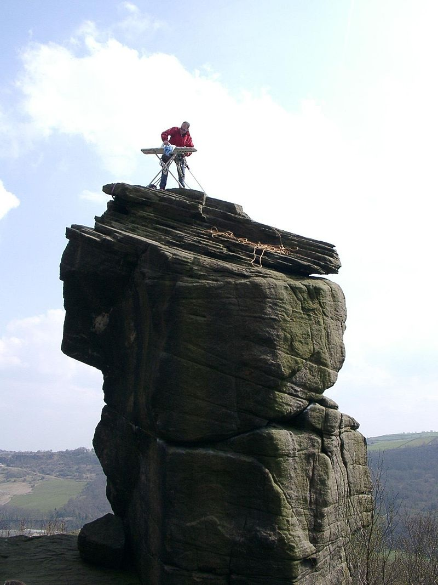

Extreme Ironing?

Welcome to CIT Extreme Ironing Club! You might be wondering, actually you are definetly wondering what is Extreme Ironing? Well Extreme ironing (also called EI) is an extreme sport and a performance art in which people take ironing boards to remote locations and iron items of clothing. According to the Extreme Ironing Bureau, extreme ironing is "the latest danger sport that combines the thrills of an extreme outdoor activity with the satisfaction of a well-pressed shirt."
Part of the attraction and interest the media has shown towards extreme ironing seems to center on the issue of whether it is really a sport or not. It is widely considered to be tongue-in-cheek.
Some locations where such performances have taken place include a mountainside of a difficult climb; a forest; in a canoe; while skiing or snowboarding; on top of large bronze statues; in the middle of a street; underwater; in the middle of the M1 motorway; during a keirin race; whilst parachuting; and under the ice cover of a lake. The performances have been conducted solo or by groups.
Purists of the sport claim that it was started in 1997 in Leicester, England, by resident Phil Shaw in his back garden. Shaw came home from what he recalls as a hard day in a Leicester knitwear factory. Shaw had a number of chores to do, including ironing his shirts. Preferring the idea of an evening out rock climbing, he decided to combine the two activities into a new extreme sport. In June 1999, Shaw, who uses the nickname "Steam", embarked on an international tour to promote the activity. The stops included the United States, Fiji, New Zealand, Australia and South Africa. An encounter with German tourists in New Zealand led to the formation of a group called "Extreme Ironing International", and the German Extreme Ironing Section or GEIS.